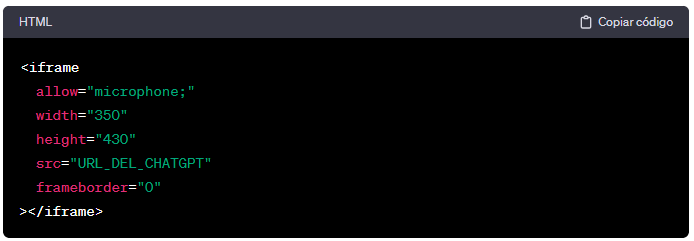
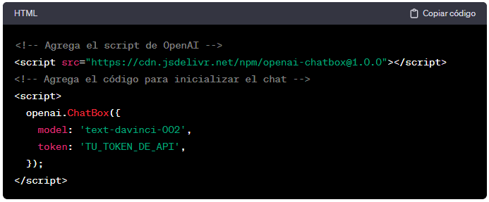

Creación de un Sitio Web en WordPress con Integración de ChatGPT: Guía Detallada
Bienvenido a esta guía completa que te llevará a través de todo el proceso de creación de un sitio web en WordPress y cómo integrar la potencia de ChatGPT para brindar una experiencia interactiva a tus visitantes. Sigue estos pasos detallados para construir un sitio web atractivo y conversacional.
Tabla de contenidos
I.Preparación Inicial
Elección del Nombre de Dominio y Registro de Hosting
Antes de sumergirnos en la creación de contenido, necesitas un nombre de dominio que represente tu marca y un servicio de hosting confiable. Proveedores como Bluehost, SiteGround y HostGator ofrecen opciones accesibles y fáciles de configurar.
Instalación de WordPress
La mayoría de los proveedores de hosting ofrecen instaladores automáticos de WordPress. Este proceso es generalmente rápido y sencillo, guiándote a través de la configuración inicial. Asegúrate de recordar tu nombre de usuario y contraseña de administrador, ya que los necesitarás más adelante.
II. Personalización de WordPress
Con WordPress instalado, es hora de personalizar tu sitio web.
1. Elección de un Tema Atractivo y Funcional
Explora la biblioteca de temas de WordPress. Si bien hay opciones gratuitas, los temas premium a menudo ofrecen más flexibilidad y características avanzadas. Selecciona uno que se alinee con tu visión y objetivos.
2. Personalización del Diseño y la Estructura
Utilice el personalizador de WordPress para ajustar los detalles visuales de su sitio. Cambia colores, tipografías y la disposición de elementos para lograr una apariencia única y atractiva.
III. Creación de Contenido
Ahora que el aspecto visual está configurado, es el momento de agregar contenido relevante.
1. Creación de Páginas y Publicaciones
Diseña páginas principales como "Inicio", "Acerca de" y "Contacto". Comienza a publicar contenido relacionado con tu temática. Organiza tu contenido de manera lógica y fácil de entender.
2. Utilización de multimedia
Integra imágenes y vídeos para hacer tu contenido más atractivo. WordPress facilita la incorporación de multimedia en tus páginas y publicaciones, lo que mejora la experiencia del usuario.
IV. Integración de ChatGPT en WordPress
Ahora, la parte emocionante: la integración de ChatGPT para una interacción más dinámica con tus visitantes.
1. Registro en la API de OpenAI
Accede a la plataforma de OpenAI y regístrate para obtener acceso a la API de ChatGPT. Sigue las instrucciones proporcionadas para obtener tus credenciales de API.
2. Implementación del ChatGPT en tu Sitio WordPress
Integrar ChatGPT puede realizarse de diversas maneras. Puedes usar un elemento iframe para incrustar un chat, o implementar la API de ChatGPT directamente en tu sitio utilizando lenguajes como JavaScript.
-
Uso de iframe
 - Uso de JavaScript 
Personalice estos códigos según las especificaciones de OpenAI y su preferencia de integración.
V. Lanzamiento y Mantenimiento Continuo
Finalmente, una vez que todo esté configurado, realice pruebas exhaustivas para asegurarte de que tu sitio y el chat estén funcionando como esperas. Lanza tu sitio web al público y realiza actualizaciones periódicas para mantener el contenido fresco y relevante.
¡Felicidades! Ha completado con éxito la creación de un sitio web en WordPress con integración de ChatGPT. Este enfoque no solo hace que tu sitio sea informativo sino también interactivo, proporcionando a tus visitantes una experiencia única y envolvente.
| Realizado por: | Siguenos en las redes sociales: |
| Begoña Calvo, Daniel Artigues y Carlos Agueda |


|